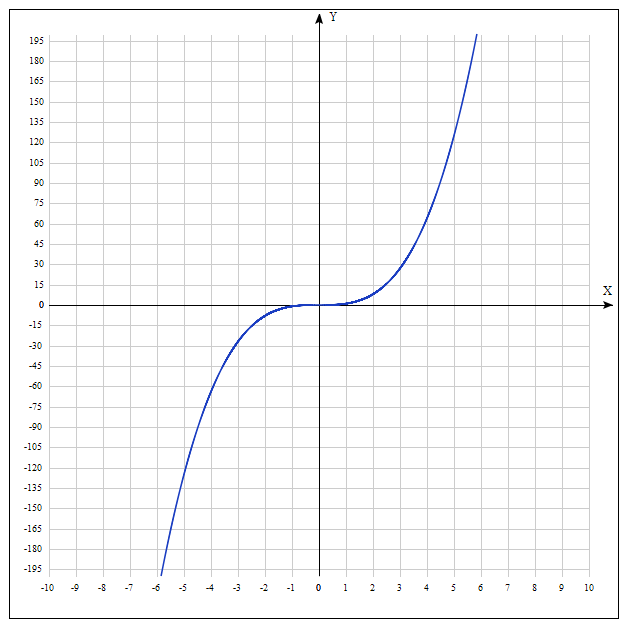

Степенные функции
Определение
Степенная функция — функция y = xa, где a (показатель степени) — некоторое вещественное число.
Линейная функция
Линейная функция — функция вида y = kx + b. Графиком линейной функции является прямая, с чем и связано её название.
Квадратичная функция
Квадратичная функция — функция вида , где и . Уравнение квадратичной функции содержит квадратный трёхчлен. Графиком квадратичной функции является парабола.
 , где
, где  и
и  . Уравнение квадратичной функции содержит квадратный трёхчлен. Графиком квадратичной функции является парабола.
. Уравнение квадратичной функции содержит квадратный трёхчлен. Графиком квадратичной функции является парабола.График функций y = xn, где n = 2, 4, 6,...
График функций y = xn, где n = 3, 5, 7,...
Функция обратной пропорциональности
Обратная пропорциональность – это функциональная зависимость, при которой уменьшение либо увеличение в несколько раз независимой величины (аргумента) вызывает пропорциональное увеличение, либо уменьшение зависимой величины (функции).
Функция обратной пропорциональности — это функция, заданная формулой где x — независимая переменная, k — число, отличное от нуля.
Функция квадратный корень из x
Функция квадратный корень из x — функция вида . График функции y равен корню из x — ветвь параболы.
Функция кубический корень из x
Функция кубический корень из x — функция вида